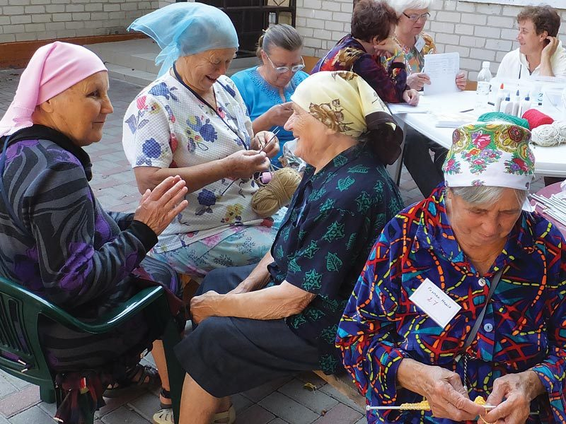
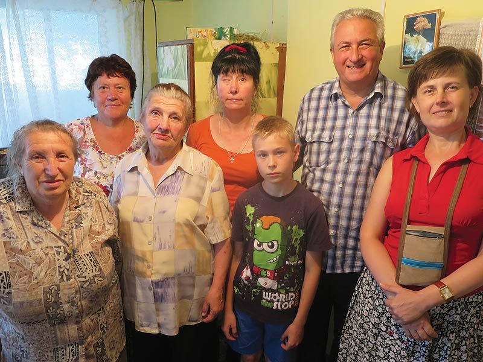
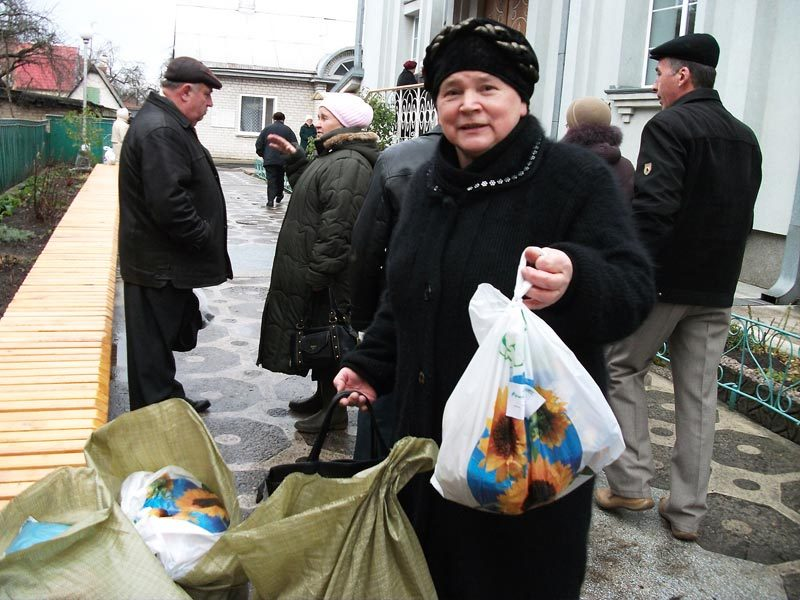
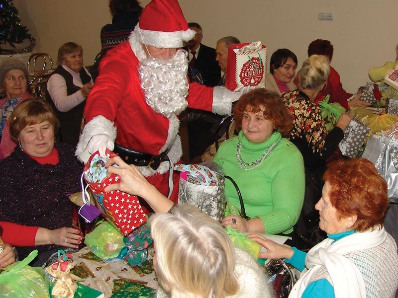

Life is hard for the elderly folk in Ukraine. With little or no money, pensions not being paid, and medical care expensive and often out of reach in remote villages, the older generation work hard just to survive. Growing their own food is essential, so a good harvest is always a blessing, and everything is preserved to last the harsh winter. Hope Now has several projects to help.
Christmas Mission
Living alone, often in poverty, can be so depressing. To help, Hope Now puts on an “English” Christmas Lunch for about 150 lonely people. A good meal, gifts, games and a Christmas message bring the smiles back.

Food and clothing
As the Ukrainian currency has lost its value, clothes and imported food have become far more expensive. Hope Now helps the most needy with food packages and with clothes brought over from the UK.

“The Nest”
Women with nowhere else to turn find refuge in “The Nest”. Lidia has opened her home to abused or lost women, who can stay for a few months until they are back on their feet. Bible studies and financial support are there for everyone who stays.

Summer Camp for widows
After a hard year and, God willing, a good harvest, the elderly women — and some men — come to Kompas Park for a week of rest and Christian teaching, led by Larisa and a UK team. It's a happy time for all.

Why it matters
From this ministry

How you can help
Your gift helps provide Christmas meals, food packages and warm clothes, keeps The Nest open, and gives lonely widows a week away at Kompas Park.